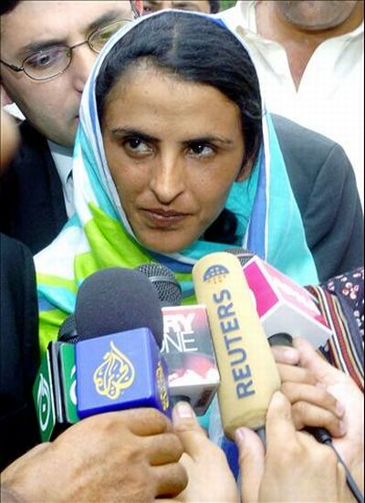

|
|
در جستوجوی عدالت /برگردان: نادیا پارسا
چهار شنبه21 اردیبهشت 1390
«مختار مایی» زن جوان پاکستانی، ۳۰ ساله بود که در تابستان سال ۲۰۰۲ مورد تجاوز مردانی از قبیلهای دیگر قرار گرفت؛ مردانی که بر پایه سنتی دیرپا، با انگیزه انتقامگیری از برادر وی، دستهجمعی به او تجاوز کردند. آنها مدعی بودند که برادر ۱۲ ساله مختار با دختری از قبیلهای آنها دیده شده است.

در سزای این بیحرمتی، بزرگان آن قبیله، حکم تجاوز دستهجمعی به خواهر آن پسر نوجوان را در برابر چشمان اهالی روستا صادر میکنند. در روز پس از واقعه، همه گمان میکردند که دیر یا زود، پدر مختار جسد دخترش را از خانه بیرون خواهد آورد یا خود مختار، همانند سایر دخترانی که در گذشته قربانیان چنین سنتی بودهاند خودکشی خواهد کرد.
در طول این سالها، «مختار» تلاش کرده است تا صدای مظلومیت قربانیانی همانند خود باشد. او هماکنون چهرهای جهانی است و در نشستها و همایشهای گوناگون شرکت میکند. اغلب از او دعوت میشود تا از تجربههای حرفهای خود در مقام یک فعال حقوق بشر در زمینه مسائل آموزشی و زنان در پاکستان سخن بگوید.
مختار در نهایت موفق شد که از متجاوزین خود غرامتی در حدود هشتهزار دلار بگیرد؛ مبلغی که همه آن صرف ساختن مدرسه و مراکز آموزشی در روستای زادگاهش شده است. او سازمانی را نیز برای حمایت از زنان پاکستانی بنیاد نهاد: «سازمان زنان مختار مایی» در حال حاضر بخشهای مختلفی همچون خانههای امن، خدمترسانی برای قربانیان خشونت و مرکز پژوهشی دارد.
این سازمان در نواحی دورافتاده جنوب پنجاب پاکستان، جایی که بدترین نمونههای خشونت علیه زنان، تجاوزهای جنسی، قتلهای ناموسی، ازدواج کودکان، ازدواجهای اجباری و... گزارش میشود، توانسته است مراکز فعالی دایر کند.
مختار باور دارد تنها راه مقابله با خشونتهای خانگی و موارد نقض فاحش حقوق بشر در کشورش، بالا رفتن سطح آگاهی مردم و از بین بردن سنتهای قبیلهای و قوانین عرفی حاکم است. مستندهای گوناگونی در خصوص زندگی مختار ساخته شده است. یکی از این مستندها با نام «زمین، طلا و زن» با استقبال بسیار زیادی مواجه شد.
کتاب خاطرات او نیز که در سال ۲۰۰۶ به چاپ رسیده تاکنون به ۲۳ زبان ترجمه شده است. او در سال ۲۰۰۷ برنده جایزه ویژه (شمال-جنوب) «شورای اروپا» نیز شد.
چندی پیش، در ۲۱ آوریل، دیوان عالی پاکستان حکم آزادی پنج تن از شش متهم پرونده مختار را صادر کرد؛ حکمی ناعادلانه که مورد اعتراض شدید فعالان حقوق بشر و زنان پاکستانی قرار گرفت.
گفتوگویی که در زیر میخوانید، برگردان مصاحبه هفتهنامه آمریکایی نیوزویک با مختارمایی است. این گفتوگو هفته پیش منتشر شده است.
نیوزویک: واکنش شما نسبت به صدور این حکم چیست؟
مختار مایی: من عمیقاً متاثر و شوکه هستم. من گمان میکردم که دادگاه قضاوت عادلانهای خواهد داشت؛ اما باید بگویم که هیچ عدالتی در دستگاه قضایی پاکستان وجود ندارد. من باور دارم که نیروی پلیس و دستگاه قضایی همانند یکدیگر عمل میکنند.
موانع اصلی در جریان دادرسی پرونده شما چه بودند؟
واقعیت این است که شواهد پرونده به درستی جمعآوری نشدند. این در حالی بود که مدارک پرشماری ازجمله مدارک پزشکی وجود داشت. ضمناً همه اهالی روستا نیز میتوانند به نفع من شهادت دهند. گزارش تحقیقی پلیس و نیز برخی از اظهارات اولیه که جمعآوری شدند ناقص بودند، به سبب اینکه آنها دروغ گفتند. یکی از قضات پرونده به این امر واقف است و رای او نیز با من بود ولی دوتای دیگر نه.
عکسالعمل مردم روستای «میروالا» نسبت به این حکم دادگاه چه بود؟
آنها بسیار ناراحتند. واقعیت این است که همه میدانند چه اتفاقی افتاده است. همه حقیقت را میدانند. زنان روستا برای من و خودشان احساس خطر میکنند. پرسش اصلی این است: اگر من نتوانستم بعد از این همه سال مشمول اجرای عدالت بشوم، چه بر سر قربانی بعدی خواهد آمد؟
به نظر شما آیا برای زنان پاکستان، صدور این حکم به منزله بازگشت به نقطه آغازین است؟
بله همینطور است. آنها با صدور این حکم همه زنان پاکستان را تحقیر کردند. پیش از این دست کم میتوانستم زنان روستای خود را دلداری دهم، چراکه فکر میکردم از پشتیبانی دستگاه قضایی برخوردارم، اما حالا به آنها چه میتوانم بگویم؟ مطمئناً این امر در شکست اعتماد به نفس آنها تاثیر زیادی خواهد گذاشت. به نظر من، این حکم، عقبگردی برای زنان روستای من، تمامی زنان پاکستان و نیز همه پاکستانیهاست.
شما به دنبال صدور حکم -ابتدایی- دادگاه، مبلغی را به عنوان غرامت دریافت کردید که صرف ساخت مدارسی در روستای زادگاهتان شد؛ شرایط کنونی این مدارس چگونه است؟
در ابتدا، به سبب اینکه در روستای من هیچ مفهوم مشخصی از «مدرسه» وجود نداشت، کار بسیار دشوار بود، اما به تدریج همه اهالی روستا بچههای خودشان را به مدرسه فرستادند. علاوه بر این ما به بسیاری از زنانی که به این مراکز آموزشی- بهداشتی مراجعه کردند توانستیم کمکهای درمانی و مشاوره ارائه دهیم. لازم به ذکر است، حتی فرزندان مردانی که به من تجاوز کردند نیز در همین مدرسهها ثبت نام شدهاند.
آیا به دنبال صدور این حکم تازه، شما احساس امنیت میکنید؟ آیا دولت هیچ تدابیر امنیتی خاصی برای شما در نظر گرفته است؟
واقعیت این است که در حال حاضر، کسانی که به من حمله کردهاند در مقایسه با من از قدرت بیشتری برخوردارند. آنها هستند که در امنیت قرار دارند و نه من. احساس آرامش ندارم. هیچ احساس امنیت نمیکنم. چندتایی پلیس در طول شب در خیابان هستند، اما همهاش همین است. از زمانی که دادگاه عالی این حکم جدید را صادر کرده، هیچ تدابیر امنیت خاصی برای من فراهم نشده است.
در گذشته چند کشور اروپایی به شما پیشنهاد پناهندگی دادند. آیا با در نظر گرفتن شرایط تازه حاضرید که کشورتان را ترک کنید؟
زمانی که به من پیشنهاد پناهندگی شد، آن را رد کردم. پاکستان خانه من است. «میروالا» خانه من است. اگر بخواهم میتوانم برای پناهندگی خود اقدام کنم، اما همین جا خواهم ماند. من در اینجا کار میکنم؛ به مردم کمک میکنم. اگر اینجا را ترک کنم، کارم متوقف خواهد شد و دیگر نمیتوانم آن را ادامه دهم.
با توجه به آنچه اتفاق افتاده، اگر برایتان امکان بازگشت به گذشته وجود داشت، بار دیگر همین اقدامات را انجام میدادید؟
این دورهای که گذشت برای من خیلی دشوار بود. تصمیم اخیر دادگاه من را بسیار غمگین و ناامید کرده است. من اعتماد به نفس و اطمینانم را از دست دادهام. من همه این کارها را به همان اندازه که برای خودم انجام دادم، برای دیگران نیز انجام دادم و دوباره نیز انجام خواهم داد. وکیلم دادخواست جدیدی به دادگاه داده است. باید صبر کنیم و ببینیم چه پیش خواهد آمد.